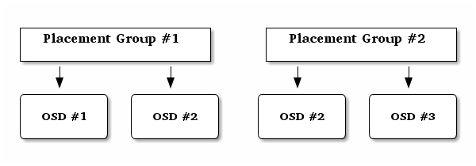

归置组¶
自伸缩归置组¶
归置组（ PG ）是 Ceph 如何散布数据的一个内部实现细节。启用 pg-autoscaling 后，你可以基于集群的用法让集群做出推荐或者自动调整 PG 数。
系统内的每个存储池都有一个 pg_autoscale_mode 属性，可以设置为 off 、 on 、或 warn 。
off: 此存储池禁用自伸缩。由管理员为各个存储池选择合适的 PG 数量。详情参考 确定归置组数量 。on: 在指定存储池上启用 PG 数的自动调整。warn: PG 数应该调整时发出健康报警。
为现有存储池设置自伸缩模式，
ceph osd pool set <pool-name> pg_autoscale_mode <mode>
例如，要在 foo 存储池上启用自伸缩：
ceph osd pool set foo pg_autoscale_mode on
你也可以配置默认的 pg_autoscale_mode ，它将应用于以后创建的所有存储池：
ceph config set global osd_pool_default_pg_autoscale_mode <mode>
查看 PG 伸缩建议¶
用此命令可以查看各个存储池、其相对利用率、以及 PG 数建议的更改数值：
ceph osd pool autoscale-status
命令输出形似如下：
POOL SIZE TARGET SIZE RATE RAW CAPACITY RATIO TARGET RATIO PG_NUM NEW PG_NUM AUTOSCALE
a 12900M 3.0 82431M 0.4695 8 128 warn
c 0 3.0 82431M 0.0000 0.2000 1 64 warn
b 0 953.6M 3.0 82431M 0.0347 8 warn
SIZE is the amount of data stored in the pool. TARGET SIZE, if present, is the amount of data the administrator has specified that they expect to eventually be stored in this pool. The system uses the larger of the two values for its calculation.
RATE is the multiplier for the pool that determines how much raw storage capacity is consumed. For example, a 3 replica pool will have a ratio of 3.0, while a k=4,m=2 erasure coded pool will have a ratio of 1.5.
RAW CAPACITY is the total amount of raw storage capacity on the OSDs that are responsible for storing this pool’s (and perhaps other pools’) data. RATIO is the ratio of that total capacity that this pool is consuming (i.e., ratio = size * rate / raw capacity).
TARGET RATIO, if present, is the ratio of storage that the administrator has specified that they expect this pool to consume. The system uses the larger of the actual ratio and the target ratio for its calculation. If both target size bytes and ratio are specified, the ratio takes precedence.
PG_NUM is the current number of PGs for the pool (or the current
number of PGs that the pool is working towards, if a pg_num
change is in progress). NEW PG_NUM, if present, is what the
system believes the pool’s pg_num should be changed to. It is
always a power of 2, and will only be present if the “ideal” value
varies from the current value by more than a factor of 3.
The final column, AUTOSCALE, is the pool pg_autoscale_mode,
and will be either on, off, or warn.
自动化的伸缩¶
Allowing the cluster to automatically scale PGs based on usage is the
simplest approach. Ceph will look at the total available storage and
target number of PGs for the whole system, look at how much data is
stored in each pool, and try to apportion the PGs accordingly. The
system is relatively conservative with its approach, only making
changes to a pool when the current number of PGs (pg_num) is more
than 3 times off from what it thinks it should be.
The target number of PGs per OSD is based on the
mon_target_pg_per_osd configurable (default: 100), which can be
adjusted with:
ceph config set global mon_target_pg_per_osd 100
The autoscaler analyzes pools and adjusts on a per-subtree basis. Because each pool may map to a different CRUSH rule, and each rule may distribute data across different devices, Ceph will consider utilization of each subtree of the hierarchy independently. For example, a pool that maps to OSDs of class ssd and a pool that maps to OSDs of class hdd will each have optimal PG counts that depend on the number of those respective device types.
配置期望的存储池尺寸¶
When a cluster or pool is first created, it will consume a small
fraction of the total cluster capacity and will appear to the system
as if it should only need a small number of placement groups.
However, in most cases cluster administrators have a good idea which
pools are expected to consume most of the system capacity over time.
By providing this information to Ceph, a more appropriate number of
PGs can be used from the beginning, preventing subsequent changes in
pg_num and the overhead associated with moving data around when
those adjustments are made.
The target size* of a pool can be specified in two ways: either in terms of the absolute size of the pool (i.e., bytes), or as a ratio of the total cluster capacity.
For example,:
ceph osd pool set mypool target_size_bytes 100T
will tell the system that mypool is expected to consume 100 TiB of space. Alternatively,:
ceph osd pool set mypool target_size_ratio .9
will tell the system that mypool is expected to consume 90% of the total cluster capacity.
You can also set the target size of a pool at creation time with the optional --target-size-bytes <bytes> or --target-size-ratio <ratio> arguments to the ceph osd pool create command.
Note that if impossible target size values are specified (for example,
a capacity larger than the total cluster, or ratio(s) that sum to more
than 1.0) then a health warning
(POOL_TARET_SIZE_RATIO_OVERCOMMITTED or
POOL_TARGET_SIZE_BYTES_OVERCOMMITTED) will be raised.
设置存储池的 PG 数量界限¶
It is also possible to specify a minimum number of PGs for a pool. This is useful for establishing a lower bound on the amount of parallelism client will see when doing IO, even when a pool is mostly empty. Setting the lower bound prevents Ceph from reducing (or recommending you reduce) the PG number below the configured number.
You can set the minimum number of PGs for a pool with:
ceph osd pool set <pool-name> pg_num_min <num>
You can also specify the minimum PG count at pool creation time with
the optional --pg-num-min <num> argument to the ceph osd pool
create command.
预定义 pg_num¶
用此命令创建存储池时：
ceph osd pool create {pool-name} pg_num
确定 pg_num 取值是强制性的，因为不能自动计算。下面是几个常用的值：
少于 5 个 OSD 时可把
pg_num设置为 128OSD 数量在 5 到 10 个时，可把
pg_num设置为 512OSD 数量在 10 到 50 个时，可把
pg_num设置为 1024OSD 数量大于 50 时，你得理解权衡方法、以及如何自己计算
pg_num取值自己计算
pg_num取值时可借助 pgcalc 工具
随着 OSD 数量的增加，正确的 pg_num 取值变得更加重要，因为它显著地影响着集群的行为、以及出错时的数据持久性（即灾难性事件导致数据丢失的概率）。
归置组是如何使用的？¶
存储池内的归置组（ PG ）把对象汇聚在一起，因为跟踪每一个对象的位置及其元数据需要大量计算——即一个拥有数百万对象的系统，不可能在对象这一级追踪位置。

Ceph 客户端会计算某一对象应该位于哪个归置组里，它是这样实现的，先给对象 ID 做哈希操作，然后再根据指定存储池里的 PG 数量、存储池 ID 做一个运算。详情见 PG 映射到 OSD 。
The object’s contents within a placement group are stored in a set of OSDs. For instance, in a replicated pool of size two, each placement group will store objects on two OSDs, as shown below.

Should OSD #2 fail, another will be assigned to Placement Group #1 and will be filled with copies of all objects in OSD #1. If the pool size is changed from two to three, an additional OSD will be assigned to the placement group and will receive copies of all objects in the placement group.
Placement groups do not own the OSD; they share it with other placement groups from the same pool or even other pools. If OSD #2 fails, the Placement Group #2 will also have to restore copies of objects, using OSD #3.
When the number of placement groups increases, the new placement groups will be assigned OSDs. The result of the CRUSH function will also change and some objects from the former placement groups will be copied over to the new Placement Groups and removed from the old ones.
Placement Groups Tradeoffs¶
Data durability and even distribution among all OSDs call for more placement groups but their number should be reduced to the minimum to save CPU and memory.
Data durability¶
After an OSD fails, the risk of data loss increases until the data it contained is fully recovered. Let’s imagine a scenario that causes permanent data loss in a single placement group:
某一 OSD 失败了，然后其内的所有对象都丢失了。对于那个归置组内的所有对象来说，副本数一下子从 3 降到了 2 。
Ceph 开始恢复这个归置组，选定一个新 OSD ，并重建所有对象的第三份副本。
Another OSD, within the same placement group, fails before the new OSD is fully populated with the third copy. Some objects will then only have one surviving copies.
Ceph picks yet another OSD and keeps copying objects to restore the desired number of copies.
A third OSD, within the same placement group, fails before recovery is complete. If this OSD contained the only remaining copy of an object, it is permanently lost.
In a cluster containing 10 OSDs with 512 placement groups in a three replica pool, CRUSH will give each placement groups three OSDs. In the end, each OSDs will end up hosting (512 * 3) / 10 = ~150 Placement Groups. When the first OSD fails, the above scenario will therefore start recovery for all 150 placement groups at the same time.
The 150 placement groups being recovered are likely to be homogeneously spread over the 9 remaining OSDs. Each remaining OSD is therefore likely to send copies of objects to all others and also receive some new objects to be stored because they became part of a new placement group.
The amount of time it takes for this recovery to complete entirely depends on the architecture of the Ceph cluster. Let say each OSD is hosted by a 1TB SSD on a single machine and all of them are connected to a 10Gb/s switch and the recovery for a single OSD completes within M minutes. If there are two OSDs per machine using spinners with no SSD journal and a 1Gb/s switch, it will at least be an order of magnitude slower.
In a cluster of this size, the number of placement groups has almost no influence on data durability. It could be 128 or 8192 and the recovery would not be slower or faster.
However, growing the same Ceph cluster to 20 OSDs instead of 10 OSDs is likely to speed up recovery and therefore improve data durability significantly. Each OSD now participates in only ~75 placement groups instead of ~150 when there were only 10 OSDs and it will still require all 19 remaining OSDs to perform the same amount of object copies in order to recover. But where 10 OSDs had to copy approximately 100GB each, they now have to copy 50GB each instead. If the network was the bottleneck, recovery will happen twice as fast. In other words, recovery goes faster when the number of OSDs increases.
If this cluster grows to 40 OSDs, each of them will only host ~35 placement groups. If an OSD dies, recovery will keep going faster unless it is blocked by another bottleneck. However, if this cluster grows to 200 OSDs, each of them will only host ~7 placement groups. If an OSD dies, recovery will happen between at most of ~21 (7 * 3) OSDs in these placement groups: recovery will take longer than when there were 40 OSDs, meaning the number of placement groups should be increased.
不论恢复时间有多短，在此期间都可能有第二个 OSD 失败。在前述的有 10 个 OSD 的集群中，不管哪个失败了，都有大约 17 个归置组（即需恢复的大约 150 / 9 个归置组）将只有一份可用副本；并且假设剩余的 8 个 OSD 中任意一个失败，两个归置组中最后的对象都有可能丢失（即正在恢复的、大约 17 / 8 个仅剩一个副本的归置组）。
当集群大小变为 20 个 OSD 时， 3 个 OSD 丢失导致的归置组损坏会降低。第二个 OSD 丢失会降级大约 4 个（即需恢复的归置组约为 75 / 19 ）而不是约 17 个归置组，并且只有当第三个 OSD 恰好是包含可用副本的四分之一个 OSD 时、才会丢失数据。换句话说，假设在恢复期间丢失一个 OSD 的概率是 0.0001% ，那么，在包含 10 个 OSD 的集群中丢失 OSD 的概率是 17 * 10 * 0.0001% ，而在 20 个 OSD 的集群中将是 4 * 20 * 0.0001% 。
In a nutshell, more OSDs mean faster recovery and a lower risk of cascading failures leading to the permanent loss of a Placement Group. Having 512 or 4096 Placement Groups is roughly equivalent in a cluster with less than 50 OSDs as far as data durability is concerned.
Note: It may take a long time for a new OSD added to the cluster to be populated with placement groups that were assigned to it. However there is no degradation of any object and it has no impact on the durability of the data contained in the Cluster.
Object distribution within a pool¶
Ideally objects are evenly distributed in each placement group. Since CRUSH computes the placement group for each object, but does not actually know how much data is stored in each OSD within this placement group, the ratio between the number of placement groups and the number of OSDs may influence the distribution of the data significantly.
For instance, if there was a single placement group for ten OSDs in a three replica pool, only three OSD would be used because CRUSH would have no other choice. When more placement groups are available, objects are more likely to be evenly spread among them. CRUSH also makes every effort to evenly spread OSDs among all existing Placement Groups.
As long as there are one or two orders of magnitude more Placement Groups than OSDs, the distribution should be even. For instance, 300 placement groups for 3 OSDs, 1000 placement groups for 10 OSDs etc.
Uneven data distribution can be caused by factors other than the ratio between OSDs and placement groups. Since CRUSH does not take into account the size of the objects, a few very large objects may create an imbalance. Let say one million 4K objects totaling 4GB are evenly spread among 1000 placement groups on 10 OSDs. They will use 4GB / 10 = 400MB on each OSD. If one 400MB object is added to the pool, the three OSDs supporting the placement group in which the object has been placed will be filled with 400MB + 400MB = 800MB while the seven others will remain occupied with only 400MB.
确定归置组数量¶
If you have more than 50 OSDs, we recommend approximately 50-100 placement groups per OSD to balance out resource usage, data durability and distribution. If you have less than 50 OSDs, chosing among the preselection above is best. For a single pool of objects, you can use the following formula to get a baseline:
(OSDs * 100)
Total PGs = ------------
pool size
Where pool size is either the number of replicas for replicated pools or the K+M sum for erasure coded pools (as returned by ceph osd erasure-code-profile get).
You should then check if the result makes sense with the way you designed your Ceph cluster to maximize data durability, object distribution and minimize resource usage.
其结果汇总后应该接近 2 的幂。汇总并非强制的，如果你想确保所有归置组内的对象数大致相等，最好检查下。
比如，一个配置了 200 个 OSD 且副本数为 3 的集群，你可以这样估算归置组数量：
(200 * 100)
----------- = 6667. Nearest power of 2: 8192
3
当用了多个数据存储池来存储数据时，你得确保均衡每个存储池的归置组数量、且归置组数量分摊到每个 OSD ，这样才能达到较合理的归置组总量，并因此使得每个 OSD 无需耗费过多系统资源或拖慢连接进程就能实现较小变迁。
以这样一个集群为例，它拥有 10 个存储池、每个存储池有 512 个归置组，分布在 10 个 OSD 上；即 5120 个归置组散布在 10 个 OSD 上，也就是平均每个 OSD 上有 512 个归置组；如此配置，不会占用太多资源。然而，如果创建的是 1000 个存储池，且各存储池分别有 512 个归置组，那么每个 OSD 就得处理 5 万多个归置组，这样的话光是建立互联就需要不少资源和时间。
你可以借助于 PGCalc 工具。
设置归置组数量¶
要设置某存储池的归置组数量，你必须在创建它时就指定好，详情见创建存储池。即使某一存储池已创建，你仍然可以用下面的命令更改归置组数量：
ceph osd pool set {pool-name} pg_num {pg_num}
你增加归置组数量后、还必须增加用于归置的归置组（ pgp_num ）数量，这样才会开始重均衡。 pgp_num 数值才是 CRUSH 算法采用的用于归置的归置组数量。虽然 pg_num 的增加引起了归置组的分割，但是只有当用于归置的归置组（即 pgp_num ）增加以后，数据才会被迁移到新归置组里。 pgp_num 的数值应等于
pg_num 。可用下列命令增加用于归置的归置组数量：
ceph osd pool set {pool-name} pgp_num {pgp_num}
减少归置组数量时，系统会自动调整 pgp_num 数值。
获取卡住的归置组统计信息¶
要获取所有卡在某状态的归置组统计信息，执行命令：
ceph pg dump_stuck inactive|unclean|stale|undersized|degraded [--format <format>] [-t|--threshold <seconds>]
Inactive （不活跃）归置组不能处理读写，因为它们在等待一个有最新数据的 OSD 复活且进入集群。
Unclean （不干净）归置组含有复制数未达到期望数量的对象，它们应该在恢复中。
Stale （不新鲜）归置组处于未知状态：存储它们的 OSD 有段时间没向监视器报告了（由 mon_osd_report_timeout 配置）。
可用格式有 plain （默认）和 json 。阀值定义的是，归置组被认为卡住前等待的最小时间（默认 300 秒）。
获取一归置组运行图¶
要获取一个具体归置组的归置组图，执行命令：
ceph pg map {pg-id}
例如：
ceph pg map 1.6c
Ceph 将返回归置组图、归置组、和 OSD 状态：
osdmap e13 pg 1.6c (1.6c) -> up [1,0] acting [1,0]
洗刷归置组¶
要洗刷一个归置组，执行命令：
ceph pg scrub {pg-id}
Ceph 检查原始的和任何复制节点，生成归置组里所有对象的目录，然后再对比，确保没有对象丢失或不匹配，并且它们的内容一致。
改变归置组的回填/恢复优先级¶
你可能会遇到这样的情形，有一大堆归置组需要恢复和/或回填，而其中有几个组内的数据比其它的更重要（例如，那些 PG 持有正在运行着的机器的映像数据，而其它 PG 上的数据是不太活跃的机器、或不相干的数据用着）。在那种情形下，你可能想更改那些归置组的恢复优先级，这样它们的性能和/或数据可用性就可以早些恢复。要达成这个目标（把特定归置组标记为在回填或恢复期间有高优先级），用此命令：
ceph pg force-recovery {pg-id} [{pg-id #2}] [{pg-id #3} ...]
ceph pg force-backfill {pg-id} [{pg-id #2}] [{pg-id #3} ...]
这样， Ceph 就会优先处理指定归置组的恢复或回填工作，其它则靠后。这个设置不会中断当前正在进行的回填或恢复，而是让指定的 PG 尽快被处理。如果你改主意了，或者弄错了归置组，可以用如下命令取消：
ceph pg cancel-force-recovery {pg-id} [{pg-id #2}] [{pg-id #3} ...]
ceph pg cancel-force-backfill {pg-id} [{pg-id #2}] [{pg-id #3} ...]
这会删除那些 PG 的 force 标记，然后系统会按默认顺序处理它们。再次提醒，这操作不会影响当前正处理着的归置组，只影响还在队列里的那些。
归置组恢复或回填完后， force 标记会被自动清除。
恢复丢失的¶
如果集群丢了一或多个对象，而且必须放弃搜索这些数据，你就要把未找到的对象标记为丢失（ lost ）。
如果所有可能的位置都查询过了，而仍找不到这些对象，你也许得放弃它们了。这可能是罕见的失败组合导致的，集群在写入完成前，未能得知写入是否已执行。
当前只支持 revert 选项，它使得回滚到对象的前一个版本（如果它是新对象）或完全忽略它。要把 unfound 对象标记为 lost ，执行命令：
ceph pg {pg-id} mark_unfound_lost revert|delete
Important
此功能要谨慎使用，它可能迷惑那些期望对象存在的应用程序。